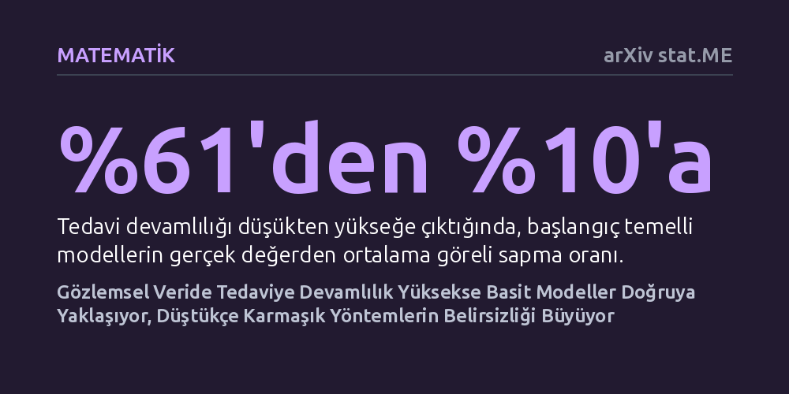

MATEMATIK · arXiv stat.ME · 2026-09-08
Araştırmacılar, zamana yayılan klinik verilerde tedaviye devam etme sıklığının nedensel etki hesaplayan istatistiksel modelleri nasıl etkilediğini 9 farklı simülasyonla inceledi. Tedaviye devamlılık arttığında basit başlangıç modellerinin sapması yüzde 61'den yüzde 10'a gerilerken, devamlılık azaldığında gelişmiş zamansal modellerin hata aralığının iki katına çıktığı saptandı.
Uzun süreli hasta verilerini incelerken en karmaşık yöntemin her zaman en güveniliri olmadığını, hastaların tedaviye devam etme alışkanlığının hangi analiz modelinin seçileceğini doğrudan belirlemesi gerektiğini gösteriyor.

Tıpta bir ilacın veya tedavi yönteminin uzun vadeli sonuçlarını anlamak için her zaman yıllar süren ve yüksek maliyetli klinik deneyler yapılamaz. Araştırmacılar bu nedenle hastane kayıtları ve elektronik sağlık verileri gibi rutin süreçte toplanmış gözlemsel verilere yönelirler. Ancak bu veriler zaman içinde birikirken işler hızla karmaşıklaşır; hastaların durumları değiştikçe hekimlerin kararları farklılaşır ve bu durum tedavinin gerçek etkisini gölgeleyebilir.
İstatistikçiler bu engeli aşmak için iki ana yola başvurur: Yalnızca hastanın başlangıç anındaki verilerine bakan sade modeller veya zaman içindeki tüm dalgalanmaları izleyen karmaşık zamansal modeller. Bilim çevrelerinde genellikle zamanı izleyen karmaşık modellerin her zaman daha üstün sonuç vereceği varsayılır. Ancak bu çalışma, hastaların tedaviye devam etme sıklığının bu iki model ailesinin başarısını kökten değiştirebileceği şüphesiyle yola çıkmıştır.
Araştırmacılar, gerçek hasta verilerinde sonucu neyin belirlediğini tam olarak bilemeyecekleri için denetimli bir simülasyon kurguladılar. Yapısal nedensel modeller kullanılarak, zamanla değişen karıştırıcı etkenlerin, iki seçenekli tedavi tercihlerinin ve kalıcı bir klinik sonucun yer aldığı sentetik bir veri evreni inşa edildi. Böylece araştırmacılar doğanın kurallarını kendileri belirleyerek mutlak gerçeği tam olarak bildikleri bir deney sahası elde ettiler.
Simülasyonda matematiksel karmaşıklık ile hastaların tedaviye sadakat düzeyleri birleştirilerek dokuz farklı senaryo üretildi. Ardından, sürekli tedavi koşulları altında Monte Carlo yöntemiyle hesaplanan kesin risk oranları referans kabul edildi. Üç başlangıç temelli model ile iki gelişmiş zamansal modelin bu kesin gerçek değerlere ne kadar yaklaşabildiği ve ne kadar dağıldığı titizlikle kıyaslandı.
Elde edilen sonuçlar, istatistiksel modellerin başarısını belirleyen ana unsurun fonksiyonel karmaşıklıktan ziyade tedavi devamlılığı olduğunu gösterdi. Hastalar tedavilerini bırakmayıp düzenli sürdürdüğünde, başlangıç anına odaklanan basit modeller beklenmedik biçimde yüksek başarı gösterdi. Başlangıç modellerinin gerçek değerden ortalama sapması, düşük devamlılık altındaki yüzde 61 seviyesinden yüksek devamlılık koşullarında yüzde 10'a kadar geriledi.
Buna karşılık hastalar tedaviyi sık sık bıraktığında veya düzensiz kullandığında, gelişmiş zamansal modeller ciddi bir belirsizlik krizine girdi. Düşük devamlılık, veri setinde belirli tedavi durumlarının seyrekleşmesine yol açarak modellerin tahmin aralığını aşırı derecede genişletti. Zamansal ters olasılık ağırlıklandırması modelinin hata aralığı 0,22'den 0,46'ya çıkarken, zamansal hedeflenmiş tahminleyici de 0,20'den 0,36'ya yükselerek güvenilirliğini yitirdi.
Bu bulgular, sağlık verisi analizlerinde ezbere bir şekilde en karmaşık ve en gelişmiş yönteme sarılmanın her zaman doğru olmadığını ortaya koymaktadır. İncelenen hasta grubunda tedaviye sadakat yüksekse, uygulanması çok daha pratik ve hesaplama maliyeti düşük olan temel modeller gerçeğe oldukça yakın sonuçlar sunabilmektedir.
Öte yandan tedavinin sık kesintiye uğradığı dinamik süreçlerde, teorik olarak kusursuz kabul edilen ileri düzey zamansal yöntemler dahi verideki seyreklik nedeniyle büyük tutarsızlıklar üretebilmektedir. Dolayısıyla araştırmacıların yöntem seçerken sadece algoritmanın teorik gücüne değil, incelenen hastalığın ve tedavinin gerçek hayattaki uygulanış biçimine göre karar vermesi gerekmektedir.